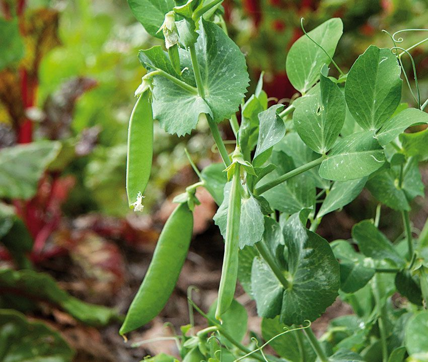

Ayuntamiento de Senés
JARDIN BOTANICO DE ESPECIES AUTOCTONAS DE SENES

Pisum sativum

El guisante (Pisum sativum) es una planta herbácea anual perteneciente a la familia de las leguminosas, ampliamente cultivada en el ámbito mediterráneo por su valor alimenticio y su importancia agrícola. Presenta un crecimiento trepador, adaptado a suelos fértiles y bien drenados.
Sus tallos son delgados y flexibles, desarrollando zarcillos que le permiten sujetarse a otras plantas o estructuras. Sus hojas son compuestas, con foliolos ovalados, y durante la floración produce flores blancas o rosadas que dan lugar a vainas donde se desarrollan las semillas comestibles.
El guisante es originario de la región mediterránea y de Asia occidental, donde ha sido cultivado desde la antigüedad. En la actualidad se encuentra ampliamente distribuido en zonas templadas, especialmente en huertos y sistemas agrícolas tradicionales.
El guisante es una fuente importante de proteínas vegetales, fibra, vitaminas y minerales. Además, tiene un papel destacado en la agricultura sostenible, ya que contribuye a mejorar la fertilidad del suelo mediante la fijación de nitrógeno.
El guisante simboliza la fertilidad, la abundancia y la producción agrícola, al estar estrechamente vinculado a la alimentación y al desarrollo de las comunidades rurales.
En Senés, el guisante silvestre se llama "presules", las semillas son comestibles y muy buenas para ensaladas y guisos, o para comer crudas.
El guisante florece principalmente en primavera, momento en el que desarrolla sus flores características que posteriormente darán lugar a las vainas con semillas.
Para la salud, es un alimento muy energético, apto para resolver procesos de convalescencia y anemias, agotamiento nervioso en enfermos crónicos, da fuerza a los huesos y centros vitales, es muy rico en vitaminas
El guisante fue una de las plantas utilizadas por Gregor Mendel en sus estudios sobre genética, sentando las bases de la herencia biológica moderna.